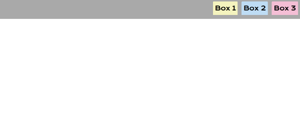
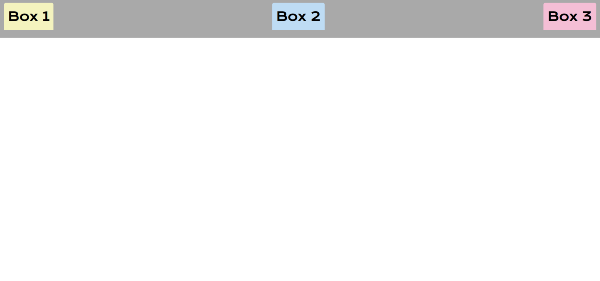
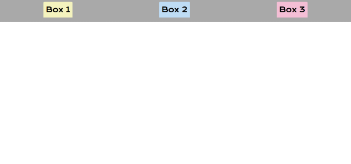
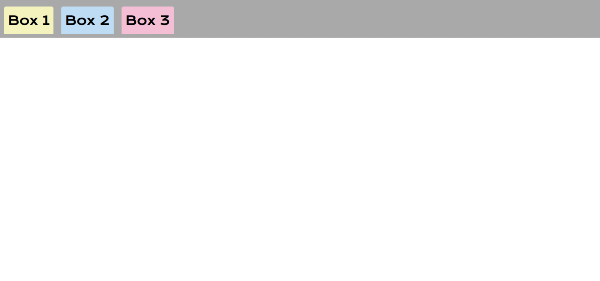

WDD 230 Lesson 3 Class Activity
This exercise will review and add to what you learned on Monday. We will be using CSS Flexbox to look at different navigation bar designs.
Instructions
- You are going to make 3 colored boxs inside a nav element.
- You will pick your own colors. Coolors is a great place to generate color schemes.
- Choose your own font from Google Fonts and import it.
- Make them responsive using CSS Flexbox.
- Remember to add padding and margin!
Navigation Bars
- As a Web Devolper you will make many navigation bars for the websites you make.
- There are many option when making a navigation bar and today we will make several kinds.
- First let us make sure that our navigation looks somewhat like this using CSS Flexbox.
- *Each one of these steps will ignore the prior. You can either delete them or rewrite them after the prior.*
Now let us move the items over to the right.
Now show the items with space between the lines.
Now show the items with space before, between, and after the lines.
Notice that the first image and this one look extremely alike.
Hint it has to do with align-items
